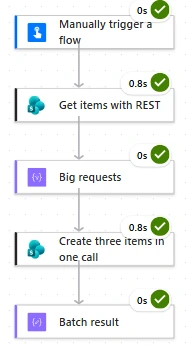
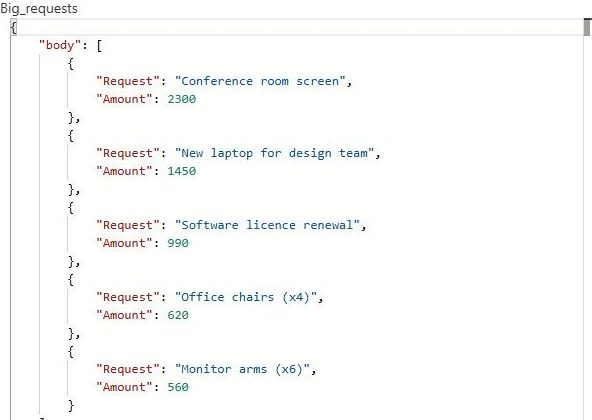
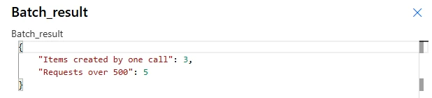

- Power Automate
- Level 9 · Integration and AI · 4 of 10
SharePoint REST API and $batch
Send an HTTP request to SharePoint calls SharePoint's REST API with the same connection: for permissions, version history, or many changes in one call with $batch.
Read with REST, write three items in one call
WhatREST URLs under
_api/ called through the SharePoint connector.WhyReach features the standard actions don't have, and cut many writes to one request.
DemoRequests over 500, then three audit rows created in one $batch.
The demo
GET items over 500, largest first
Big requests (Select)
POST
_api/$batch with three createsBatch result: 3 created

A REST read
_api/web/lists/getbytitle('Requests')/items?$select=Title,Amount&$filter=Amount gt 500&$orderby=Amount desc&$top=5| Piece | What it does |
|---|---|
lists/getbytitle('Requests') | The list (or lists(guid'…'), which survives renames). |
$select / $filter / $orderby / $top | OData options. |
Big requests
| Request | Amount |
|---|---|
| Conference room screen | 2300 |
| New laptop for design team | 1450 |
| Software licence renewal | 990 |
| Office chairs (x4) | 620 |
| Monitor arms (x6) | 560 |

Header Accept: application/json;odata=nometadata gives plain JSON.
$batch: many changes, one request
Inside a $batch body
--batch_demo--changeset_demo → POST item 1--changeset_demo → POST item 2--changeset_demo → POST item 3--changeset_demo-- / --batch_demo--Response: one
HTTP/1.1 201 per created item--batch_demo
Content-Type: multipart/mixed; boundary="changeset_demo"
--changeset_demo
Content-Type: application/http
Content-Transfer-Encoding: binary
POST https://contoso.sharepoint.com/sites/Demo/_api/web/lists/getbytitle('Audit Log')/items HTTP/1.1
Content-Type: application/json;odata=nometadata
Accept: application/json;odata=nometadata
{"Title":"Batch demo row 1","Action":"Created by $batch"}
--changeset_demo
... (rows 2 and 3, same shape) ...
--changeset_demo--
--batch_demo--sub(length(split(string(body('Create_three_items_in_one_call')), 'HTTP/1.1 201')), 1)| Piece | What it does |
|---|---|
split(..., 'HTTP/1.1 201') | Cuts at each success. |
length - 1 | Number of successes: 3. |

Watch out
- Boundaries must match the header; blank lines matter.
- A 200 on the batch doesn't mean every item succeeded: check each inner response.
- Use internal column names.
- Keep batches small (tens of operations).
New to this? Start from the basics optional
REST: GET reads, POST creates, PATCH updates, DELETE removes.
Multipart: a body of parts separated by a boundary.
Common mistakes
- No Accept header.
- A malformed batch body.
- Display names instead of internal names.